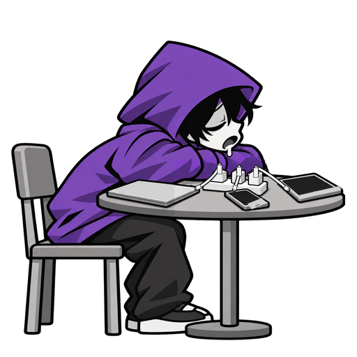
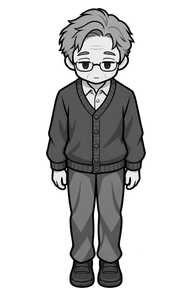
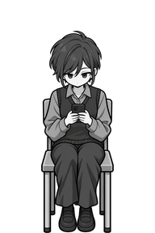
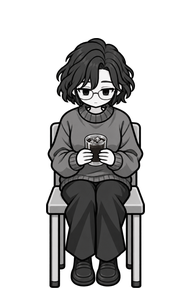

<!doctype html>
<html lang="ko">
<head>
<meta charset="utf-8">
<title>의뢰 안내 그림</title>
<!--
  Codex 의뢰에 붙이는 안내 그림을 만드는 페이지(docs/art-rules.md "의뢰서 양식" 6번). ?part=이름으로 고른다.
  의뢰 10: standing(서 있는 손님 크기 라인업). streamer(2장 빈 배경 안내)는 2장이 같은 빈 배경을 쓰게 되어 bg-streamer와 함께 지웠고, 만든 그림만 docs/layout-guide/request-streamer-empty.png에 남았다.
  의뢰 11(2026-11-01): caller(화상 회의 손님 후보의 크기와 색 기준 라인업), sleeper(잠든 카공족 게임 그림의 고칠 곳과 칸 경계),
  story1(프롤로그 1컷의 고칠 곳 덧그림).
-->
<style>
  body { margin: 0; background: #fff; font-family: system-ui, sans-serif; color: #1b1b1b; }
  .wrap { position: relative; width: 1920px; height: 1080px; }
  .wrap img { position: absolute; inset: 0; width: 1920px; height: 1080px; }
  .mark { position: absolute; box-sizing: border-box; border: 6px solid; font: 700 22px system-ui, sans-serif; }
  .mark span { position: absolute; left: -6px; top: -36px; padding: 2px 8px; color: #fff; white-space: nowrap; }
  .remove { border-color: #d0302a; }
  .remove span { background: #d0302a; }
  .keep { border-color: #2f6db3; }
  .keep span { background: #2f6db3; }
  .note { position: absolute; left: 400px; top: 930px; width: 1120px; font-size: 26px; color: #fff; background: rgba(0, 0, 0, 0.7); padding: 12px 18px; line-height: 1.5; }
  .lineup { padding: 20px; display: flex; gap: 24px; align-items: flex-end; }
  .slot { position: relative; width: 192px; height: 288px; background: #ececec; }
  .slot img { position: absolute; inset: 0; width: 192px; height: 288px; }
  .line { position: absolute; left: 0; right: 0; border-top: 2px dashed; font-size: 11px; }
  .ghost { position: absolute; bottom: 0; left: 46px; width: 100px; border: 2px dashed #555; box-sizing: border-box; background: rgba(120, 120, 120, 0.25);
    padding-top: 70px; text-align: center; font-size: 12px; line-height: 1.5; word-break: keep-all; }
  .name { width: 192px; text-align: center; font-size: 13px; margin-top: 4px; }
</style>
</head>
<body>
<div id="root"></div>
<script>
  const part = new URLSearchParams(location.search).get('part');
  const root = document.getElementById('root');
  // 칸은 그림 좌표 96px이고 판의 왼쪽 위는 bg-grid.js의 streamer 값(372, 178.5), 칸 크기는 (1547 - 372) / 12 x (875 - 178.5) / 7이다.
  const GRID = { left: 372, top: 178.5, w: (1547 - 372) / 12, h: (875 - 178.5) / 7 };
  const cell = (x, y, w = 1, h = 1) => `left:${GRID.left + x * GRID.w}px; top:${GRID.top + y * GRID.h}px; width:${w * GRID.w}px; height:${h * GRID.h}px`;

  if (part === 'standing') {
    const line = (y, color, text) => `<div class="line" style="top:${y}px; border-color:${color}; color:${color}"><span style="position:absolute; right:2px; top:-15px; background:#fff">${text}</span></div>`;
    const lines = line(8, '#3aa35a', '서 있는 키 280px 시작(위 8px)') + line(38, '#2f6db3', '앉은 키 250px 시작(위 38px)');
    const card = (inner, name) => `<div><div class="slot">${inner}${lines}</div><div class="name">${name}</div></div>`;
    root.innerHTML = '<div class="lineup">' +
      card('', '예전 서 있는 손님 guest-down') +
      card('', '확정한 8a 앉은 그림') +
      card('<div class="ghost" style="height:280px">8a 서 있기<br>키 280 ±6<br>폭 80~110<br>발이 캔버스 바닥</div>', '새 guest-8a-stand-down') +
      card('<div class="ghost" style="height:280px">8a 걷기 1<br>왼발 앞</div>', '새 guest-8a-walk1-down') +
      card('<div class="ghost" style="height:280px">8a 걷기 2<br>오른발 앞</div>', '새 guest-8a-walk2-down') +
      card('', '받아 갈 음료(밀 수 있는 초록)') +
      '</div>';
  }

  // 색 견본. 빌런 고유색은 바탕 한 가지와 같은 색 계열 그림자 한 단계(바탕의 70% 밝기)만 쓴다(docs/art-rules.md 색).
  const swatch = (base, shadow, name) => `<div style="display:flex; gap:8px; align-items:center; font-size:15px">`
    + `<div style="width:64px; height:40px; background:${base}"></div><div style="width:64px; height:40px; background:${shadow}"></div>`
    + `<span>${name}: 바탕 ${base}, 그림자 ${shadow}, 검정은 외곽선과 머리카락에만</span></div>`;

  if (part === 'caller') {
    const line = (y, color, text) => `<div class="line" style="top:${y}px; border-color:${color}; color:${color}"><span style="position:absolute; right:2px; top:-15px; background:#fff">${text}</span></div>`;
    const lines = line(38, '#2f6db3', '앉은 키 250px 시작(위 38px)');
    const card = (inner, name) => `<div><div class="slot">${inner}${lines}</div><div class="name">${name}</div></div>`;
    root.innerHTML = '<div class="lineup">' +
      card('', '손님 2a(명암 결 기준)') +
      card('', '손님 8a(명암 결 기준)') +
      card('', '바꿀 지금 촬영자(따라 그리지 말 것)') +
      card('<div class="ghost" style="height:250px; left:36px; width:120px">화상 회의 손님<br>뒷모습, 의자에 앉음<br>키 250 ±10<br>폭 90~120</div>', '나중에 그릴 게임 그림(192 x 288)') +
      '</div>' +
      '<div style="padding:0 20px 20px; display:flex; flex-direction:column; gap:10px">' +
      swatch('#2f6db3', '#214c7d', '둘째 빌런 파랑') +
      '<div style="font-size:15px; line-height:1.6; max-width:900px">이번 시험은 후보 셋의 얼굴과 상반신(512 x 512, 노트북 카메라가 보는 정면)만 그린다. 고른 뒤에 위 회색 칸의 게임 그림과 반응 그림을 그린다.<br>' +
      '헤드셋은 마이크가 달린 화상 회의용이고, 링 조명과 삼각대는 없다. 손님 2a, 8a처럼 큰 덩어리 명암 한 단계로 칠한다.</div>' +
      '</div>';
  }

  if (part === 'sleeper') {
    // 192 x 480 캔버스를 두 배로 키워 그린다. 아래 192px가 탁자 칸이고, 탁자 윗면은 그 칸 위에서 134px(y 288~422)까지다.
    const scale = 2;
    const mark = (top, height, color, text) => `<div style="position:absolute; left:0; width:${192 * scale}px; top:${top * scale}px; height:${height * scale}px; border-top:3px dashed ${color}; color:${color}; font-size:14px"><span style="position:absolute; left:${192 * scale + 8}px; top:-10px; white-space:nowrap">${text}</span></div>`;
    root.innerHTML = '<div style="position:relative; margin:20px; width:900px; height:1000px">' +
      `<div style="position:absolute; left:0; top:0; width:${192 * scale}px; height:${480 * scale}px; background:#ececec"></div>` +
      `` +
      mark(96, 192, '#555', 'y 96: 빌런 칸 위 끝(머리와 후드는 이 위로 솟아도 됨)') +
      mark(288, 134, '#2f7a54', 'y 288~422: 탁자 윗면. 멀티탭과 기기는 이 안에') +
      mark(422, 58, '#d0302a', 'y 422: 탁자 앞 가장자리. 이보다 아래에 물건을 그리지 않음') +
      `<div style="position:absolute; left:${192 * scale + 8}px; top:250px; width:470px; font-size:15px; line-height:1.6">` +
      '고칠 곳(2026-11-01 사용자 지적)<br>1. 보라 후드 위의 검은 뾰족한 그림자 조각이 얼룩덜룩하다. 아래 견본 두 색으로만 칠한다.<br>' +
      '2. 멀티탭에 폰 하나만 꽂혀 있어 멀티탭을 쓸 이유가 없다. 노트북, 폰, 태블릿 셋을 꽂는다.<br>' +
      '3. 짧은 선이 폰 옆면에 꽂혀 있다. 보통 길이의 선이 늘어져 폰 아래쪽 단자에 꽂힌다.<br>' +
      '같은 사람(보라 후드, 검은 머리, 엎드려 잠든 자세)이다. 생김새는 바꾸지 않는다.</div>' +
      `<div style="position:absolute; left:${192 * scale + 8}px; top:660px">${swatch('#7b4fb0', '#56377b', '잠든 카공족 보라')}</div>` +
      '</div>';
  }

  if (part === 'story1') {
    const box = (x, y, w, h, text) => `<div class="mark remove" style="left:${x * 1.5}px; top:${y * 1.5}px; width:${w * 1.5}px; height:${h * 1.5}px"><span>${text}</span></div>`;
    root.innerHTML = '<div class="wrap">' +
      box(0, 440, 410, 270, '앞줄 탁자가 비뚤게 놓임') +
      box(470, 320, 370, 230, '가운데 탁자가 홀로 기울어짐') +
      box(900, 450, 380, 270, '오른쪽 탁자가 또 다른 각도') +
      box(395, 195, 330, 140, '콘센트 선이 옆 탁자로 건너감') +
      '<div class="note">탁자를 창가 벽과 나란히 두 줄로 같은 간격에 놓는다. 뒷줄은 창 아래 벽에 붙은 탁자이고, 탁자마다 바로 옆 벽 아래에 콘센트가 하나씩 있다. ' +
      '손님 선은 모두 자기 탁자 옆 콘센트로 곧게 간다. 늦은 밤 붐비는 카공 카페라는 분위기, 흑백 그림체, 빛과 창밖 야경은 지금 그림을 따른다.</div></div>';
  }

  // 의뢰 12(2026-11-02). sleeperfix: 잠든 카공족 v2에서 보라색이 넘친 곳(빨간 동그라미). 게임 그림은 4배, 반응 그림은 1.4배로 키워 보인다.
  if (part === 'sleeperfix') {
    // 글자는 동그라미 오른쪽에 붙이고, 그림 밖으로 나가는 자리(onLeft)는 왼쪽에 붙인다.
    const ring = (left, top, size, text, onLeft = false) => `<div style="position:absolute; left:${left}px; top:${top}px; width:${size}px; height:${size}px; border:5px solid #d0302a; border-radius:50%; box-sizing:border-box">`
      + `<span style="position:absolute; ${onLeft ? 'right' : 'left'}:${size}px; top:-8px; white-space:nowrap; background:#d0302a; color:#fff; font:700 16px system-ui; padding:2px 6px">${text}</span></div>`;
    const panel = (src, w, h, left, top, boxW, boxH, label, rings) => `<div style="position:relative; width:${boxW}px; height:${boxH}px; overflow:hidden; background:#ececec">`
      + `${rings}`
      + `<span style="position:absolute; left:6px; bottom:6px; background:#000; color:#fff; font:700 15px system-ui; padding:2px 6px">${label}</span></div>`;
    root.innerHTML = '<div style="display:flex; gap:16px; padding:16px; align-items:flex-start">'
      + panel('../assets/style-test/villain-sleep-v2.png', 768, 1920, -160, -520, 560, 640, 'villain-sleep-v2, 4배(왼쪽 위가 x 40, y 130)',
        ring(120, 240, 110, '귀 자리 보라 조각 x 75~90, y 195~210'))
      + panel('../assets/style-test/villain-portrait-v2.webp', 1434, 1434, -350, -210, 600, 640, 'villain-portrait-v2, 1.4배(왼쪽 위가 x 250, y 150)',
        ring(420, 120, 120, '눈 바깥 끝 x 570~590, y 250~290', true) + ring(270, 470, 110, '목 x 460~485, y 495~535'))
      + '</div><div style="padding:0 16px 16px; font-size:16px; line-height:1.6; max-width:1160px">빨간 동그라미 안의 보라색만 고친다. 귀 자리는 피부(밝은 회색)나 머리카락(검정)으로, 눈 바깥 끝은 흰자와 피부로, 목은 피부의 회색 그림자로 칠한다. 그 밖의 선, 색, 자세는 그대로 둔다(2026-11-02 사용자 확인: 그 밖은 훨씬 나아졌다).</div>';
  }

  // story34: 프롤로그 새 3컷(예전 3컷을 고침)과 새 4컷(예전 5컷에 생각 풍선)의 고칠 곳. 그림은 1280 x 720을 0.75배로 보인다.
  if (part === 'story34') {
    const s = 0.75;
    const mark = (x, y, w, h, text, color = '#d0302a') => `<div style="position:absolute; left:${x * s}px; top:${y * s}px; width:${w * s}px; height:${h * s}px; border:5px solid ${color}; box-sizing:border-box">`
      + `<span style="position:absolute; left:-5px; top:-30px; white-space:nowrap; background:${color}; color:#fff; font:700 15px system-ui; padding:2px 6px">${text}</span></div>`;
    const panel = (src, marks, title) => `<div><div style="font:700 18px system-ui; margin-bottom:6px">${title}</div><div style="position:relative; width:${1280 * s}px; height:${720 * s}px">`
      + `${marks}</div></div>`;
    root.innerHTML = '<div style="display:flex; flex-direction:column; gap:22px; padding:16px">'
      + panel('../assets/a/story-3.webp', mark(750, 40, 530, 620, '빌런: 보라 후드 v2 모습, 같은 계열 그림자') + mark(900, 260, 360, 110, '멀티탭에 노트북, 폰, 태블릿. 폰 선은 아래 단자에', '#2f6db3')
        + mark(430, 430, 330, 200, '뽑힌 로봇 독과 플러그는 그대로', '#2f7a54'), '새 3컷: 지금 3컷을 고친다(구도, 로봇, 벽 콘센트, 뽑힌 독은 그대로)')
      + panel('../assets/a/story-5.webp', mark(40, 30, 560, 170, '생각 풍선(로봇 머리 위): 잠든 보라 빌런 귀 옆에서 진동벨이 울려 깨는 장면', '#2f6db3')
        + mark(820, 190, 170, 80, '카운터의 진동벨(초록)은 그대로', '#2f7a54'), '새 4컷: 지금 5컷(카운터의 진동벨을 보는 로봇)에 생각 풍선을 더한다')
      + '</div>';
  }

  // 의뢰 13(2026-11-02). cables: 잠든 카공족 충전선의 바른 연결. 지금 게임 그림(4배)과 이스터에그(2배) 위에 충전기마다 갈 기기를 초록 선으로 덧그린다.
  if (part === 'cables') {
    const svgLine = (d, label, lx, ly) => `<path d="${d}" stroke="#1d9b4a" stroke-width="7" fill="none" stroke-linecap="round"/>`
      + `<text x="${lx}" y="${ly}" font-size="20" font-weight="700" fill="#fff" stroke="#1d9b4a" stroke-width="5" paint-order="stroke">${label}</text>`;
    // 게임 그림은 192 x 480 가운데 y 280~390 탁자 윗면 쪽을 4배로 보인다(왼쪽 위가 x 0, y 280).
    const sprite = '<div style="position:relative; width:768px; height:440px; overflow:hidden; background:#ececec">'
      + ''
      + '<svg width="768" height="440" style="position:absolute; left:0; top:0">'
      + svgLine('M 320 120 C 300 170, 380 230, 392 260', '왼쪽 충전기 → 노트북 옆 단자', 20, 60)
      + svgLine('M 404 120 C 420 200, 470 260, 486 380', '가운데 충전기 → 폰 아래 단자', 470, 410)
      + svgLine('M 488 120 C 540 120, 560 220, 566 260', '오른쪽 충전기 → 태블릿 옆 단자', 470, 60)
      + '</svg><span style="position:absolute; left:6px; top:6px; background:#000; color:#fff; font:700 15px system-ui; padding:2px 6px">villain-sleep 4배(흐리게 깐 지금 그림), y 280~390</span></div>';
    const note = '<div style="font-size:16px; line-height:1.6; max-width:1500px; padding-top:10px">'
      + '멀티탭 세 구에 꽂힌 충전기마다 선이 하나씩이고, 그 선은 기기 하나의 단자까지 끊기지 않고 보인다. 기기끼리 잇는 선(태블릿에서 폰, 폰에서 노트북)과 팔이나 기기 뒤로 사라지는 선은 모두 지운다.<br>'
      + '멀티탭 자체의 전원선은 탁자 뒤쪽(위)으로 빠진다. 사람, 채색, 기기의 자리와 크기는 지금 그대로 두고 선만 다시 그린다.</div>';
    root.innerHTML = '<div style="display:flex; gap:16px; padding:16px; align-items:flex-start">' + sprite
      + '<div style="position:relative; width:720px; height:440px; overflow:hidden; background:#ececec">'
      + ''
      + '<span style="position:absolute; left:6px; bottom:6px; background:#000; color:#fff; font:700 15px system-ui; padding:2px 6px">title-egg-sleeper 2배: 같은 규칙(충전기 하나에 기기 하나)</span></div></div>'
      + `<div style="padding:0 16px 16px">${note}</div>`;
  }

  // standing2: 서 있는 손님 3b, 4b의 크기 라인업. 확정한 서 있는 8a와 앉은 3b, 4b를 나란히 놓는다.
  if (part === 'standing2') {
    const line = (y, color, text) => `<div class="line" style="top:${y}px; border-color:${color}; color:${color}"><span style="position:absolute; right:2px; top:-15px; background:#fff">${text}</span></div>`;
    const lines = line(8, '#3aa35a', '서 있는 키 280px 시작(위 8px)') + line(38, '#2f6db3', '앉은 키 250px 시작(위 38px)');
    const card = (inner, name) => `<div><div class="slot">${inner}${lines}</div><div class="name">${name}</div></div>`;
    root.innerHTML = '<div class="lineup">'
      + card('', '확정한 서 있는 8a(기준)')
      + card('', '확정한 앉은 3b(생김새)')
      + card('<div class="ghost" style="height:280px">3b 서 있기<br>키 280 ±6<br>폭 80~110<br>발이 캔버스 바닥</div>', '새 guest-3b-stand-down')
      + card('', '확정한 앉은 4b(생김새)')
      + card('<div class="ghost" style="height:280px">4b 서 있기<br>키 280 ±6<br>폭 80~110<br>발이 캔버스 바닥</div>', '새 guest-4b-stand-down')
      + '</div>';
  }
</script>
</body>
</html>
